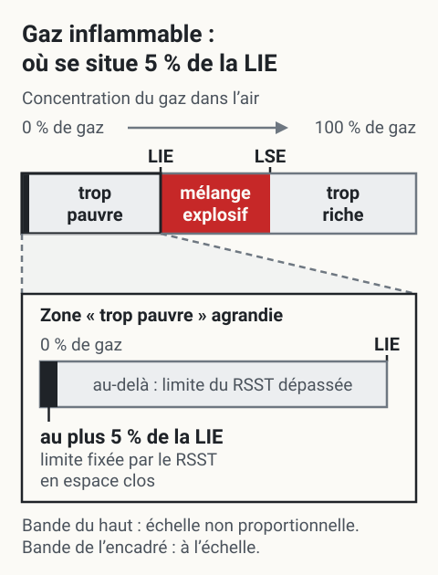
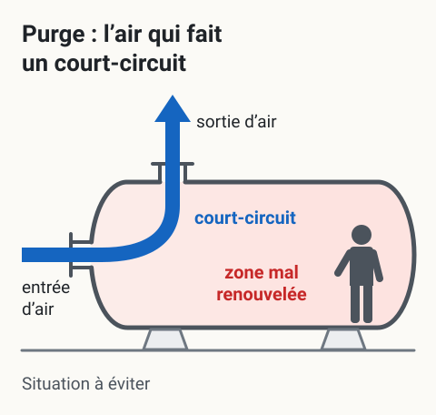
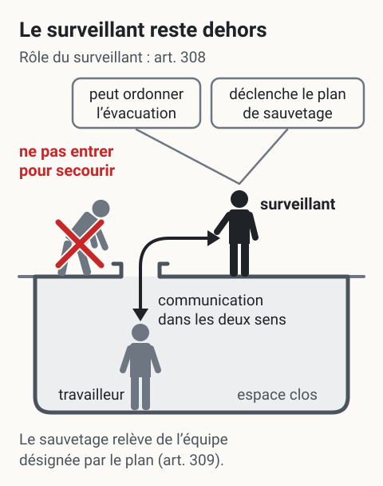

Espaces clos
Près de 40 Québécois subissent chaque année des accidents graves ou mortels en espace clos, souvent par déficience en O2 ou présence de gaz toxiques. Les articles 296.1 à 312 du RSST encadrent la gestion : permis d'entrée, surveillance, plan de sauvetage et programme d'intervention obligatoires. En mine, les silos à minerai, les réservoirs de procédé, les conduits de ventilation et certains chantiers borgnes sont des espaces clos typiques.
Définition
Selon l'article 1 du RSST, un espace clos est un espace totalement ou partiellement fermé (réservoir, silo, cuve, trémie, fosse, égout, tuyau, cheminée, puits, citerne, pale d'éolienne) qui présente, en raison du confinement, au moins un des risques suivants
- Asphyxie, intoxication, perte de conscience, incendie ou explosion (atmosphère ou T° interne).
- Ensevelissement.
- Noyade ou entraînement par un liquide.
Dangers spécifiques
Les dangers en espace clos sont multiples et interagissent.
 Toucher l'image pour l'agrandir
Toucher l'image pour l'agrandir
Atmosphériques
| Risque | Description |
|---|---|
| Déficience en O2 (< 20,5 %) | Combustion, décomposition, oxydation, purge avec gaz inerte (azote, argon) |
| Surplus d'O2 (> 23 %) | Augmente l'inflammabilité, fuite de bonbonne |
| Gaz inflammables | LIE ; doit rester ≤ 5 % de la LIE |
| Gaz toxiques | CO (asphyxie chimique), H2S (paralyse l'odorat), NO2, etc. |
| Aérosols, poussières combustibles | Risque d'explosion |
Un milieu enrichi en O2 voit son inflammabilité augmenter fortement.
{kind=link}

Toucher l'image pour l'agrandirLa limite du RSST pour les gaz et vapeurs inflammables en espace clos, au plus 5 % de la LIE, se trouve tout au début de la zone « trop pauvre », bien avant la LIE où commence le mélange explosif. Un mélange encore trop pauvre pour exploser peut donc déjà dépasser cette limite.
Lire le schéma en texte
- La bande du haut représente la concentration du gaz dans l’air, de 0 % de gaz à 100 % de gaz. Ses proportions ne sont pas à l’échelle.
- Elle compte trois zones : sous la LIE, le mélange est trop pauvre ; entre la LIE et la LSE, le mélange est explosif (zone rouge) ; au-dessus de la LSE, il est trop riche.
- L’encadré agrandit la zone « trop pauvre », de 0 % de gaz jusqu’à la LIE. Sa bande est dessinée à l’échelle.
- Tout au début de cette bande, une mince plage porte la mention « au plus 5 % de la LIE » : c’est la limite fixée par le RSST pour les gaz et vapeurs inflammables en espace clos.
- Au-delà de cette plage, la limite du RSST est dépassée, même si le mélange est encore trop pauvre pour exploser.
- L’art. 302 réserve un cas : l’atmosphère rendue inerte selon le paragraphe 3 de l’art. 303. Les autres conditions de l’art. 302 (oxygène, contaminants de l’annexe I) s’appliquent aussi.
Texte officiel : RSST, art. 302 (recueil du wiki, extrait de LégisQuébec). LIE et LSE : Gaz et vapeurs. Schéma conceptuel : aucune LIE ni aucun réglage d’alarme pour un gaz donné.
Le tétraèdre du feu rappelle les 4 éléments nécessaires à la combustion.
 Toucher l'image pour l'agrandir
Toucher l'image pour l'agrandir
Voir Gaz et vapeurs pour les densités de vapeur et la chimie.
Effets de la déficience en O2
| % O2 | Effets |
|---|---|
| 20,5 - 23 | Plage acceptable |
| 16 | Difficulté à respirer, jugement diminué |
| 12 | Évanouissement, décès rapide |
| 6 | Décès en quelques secondes |
Exemple H2S
| ppm | Effet |
|---|---|
| 0,2 | Seuil olfactif |
| 10 | VEMP |
| 100-150 | Paralysie de l'odorat |
| 400 | Décès en 30 min - 4 h |
| 1000 | Décès instantané |
La densité de vapeur conditionne où s'accumulent les gaz.
 Toucher l'image pour l'agrandir
Toucher l'image pour l'agrandir
Selon sa densité de vapeur par rapport à l’air, un gaz tend à s’accumuler plutôt au fond d’un espace clos s’il est plus lourd que l’air, plutôt en haut s’il est plus léger. C’est une tendance, pas des couches étanches.
Lire le schéma en texte
- Le schéma montre deux réservoirs en coupe, chacun ouvert par un trou d’homme au toit. Des points rouges représentent le gaz ou la vapeur.
- À gauche, densité de vapeur > 1 (plus lourd que l’air, ex. : toluène) : les points sont plus serrés près du fond et des flèches pointent vers le bas. Le gaz tend à s’accumuler au fond.
- À droite, densité < 1 (plus léger que l’air) : les points sont plus serrés sous le toit et des flèches pointent vers le haut. Le gaz tend à s’accumuler en haut.
- Dans les deux réservoirs, on voit aussi des points hors de la zone la plus chargée. Mention au bas du schéma : « Une tendance, pas des couches étanches. »
D’après la capture de cours « Air / Toluène » qu’il remplace et la densité de vapeur décrite dans Gaz et vapeurs (> 1 : descend ; < 1 : monte). Schéma conceptuel, pas un plan de mesure.
Autres dangers
- Biologiques (voir Bioaérosols).
- Physiques : T° (voir Prévention de la contrainte thermique en mine), rayonnements, bruit, vibrations.
- Mécaniques, électriques, ensevelissement, noyade, chute, claustrophobie.
Articles RSST clés
| Art. | Disposition |
|---|---|
| 296.1 | Champ d'application |
| 297 | Définitions (personne qualifiée, travail à chaud) |
| 297.1 | Aménagement d'un nouvel espace clos |
| 298 | Travailleurs habilités |
| 299 | Interdiction d'entrer |
| 300 | Cueillette de renseignements et moyens de prévention |
| 301 | Information des travailleurs |
| 302 | Ventilation, O2 entre 20,5-23 %, gaz inflammable ≤ 5 % LIE, annexe I respectée |
| 303 | Poussières combustibles |
| 304 | Travail à chaud (ventilation, relevé continu gaz inflammables) |
| 306 | Méthode et fréquence des relevés |
| 307 | Registre des relevés |
| 308 | Surveillant à l'extérieur, près de l'entrée ; communication bidirectionnelle ; peut ordonner l'évacuation |
| 308.1 | Situation imprévue, ordonner l'évacuation |
| 309 | Plan de sauvetage (équipements, formation, exercices) |
| 310 | Accès sans obstruction |
| 311 | Matières solides à écoulement libre |
| 312 | Matières liquides |
CSTC : section 3.21, articles 3.21.1 à 3.21.6 (chantiers).
Mesures de contrôle
Hiérarchie
- Éliminer l'espace clos quand possible (téléopération, modification de procédé).
- Ventilation
- Naturelle (effet de cheminée, vent).
- Générale mécanique (dilution).
- Aspiration locale (bras de captation).
- NIOSH recommande > 20 changements d'air/h.
- Purge : vider l'atmosphère, remplacer par air sain. APSAM suggère 7,5 CA/H.
Situation type à éviter lors d'une purge mal séquencée.
{kind=link}

Toucher l'image pour l'agrandirSituation à éviter lors d’une purge : l’entrée et la sortie d’air sont voisines, l’air frais ressort aussitôt (court-circuit) et le reste du réservoir, surtout l’extrémité opposée, est mal renouvelé.
Lire le schéma en texte
- Réservoir horizontal vu en coupe, avec un travailleur à l’extrémité droite.
- L’air frais (flèche bleue) entre par une ouverture à l’extrémité gauche.
- Il ressort aussitôt par une ouverture voisine, sur le dessus, à la même extrémité : c’est un court-circuit.
- Le reste du volume est une zone mal renouvelée (teinte rouge), surtout l’extrémité opposée où se trouve le travailleur.
- Mention : situation à éviter.
Redessiné d’après le croquis de cours qu’il remplace (source d’origine à retrouver). Il montre seulement la situation à éviter, pas une disposition recommandée ni un taux de renouvellement.
- Moyens administratifs : permis, procédures, formation, communication.
- EPI : adapté aux contaminants présents.
Choix du ventilateur
Trois types principaux : axial, centrifuge, antidéflagrant.
 Toucher l'image pour l'agrandir
Toucher l'image pour l'agrandir
 Toucher l'image pour l'agrandir
Toucher l'image pour l'agrandir
 Toucher l'image pour l'agrandir
Toucher l'image pour l'agrandir
Critères : type de ventilation, capacité, longueur des conduits, protection antidéflagrante, type de travaux, provenance de l'air.
Programme d'intervention en 8 étapes
- Désigner et former une personne responsable qualifiée.
- Identifier les espaces clos et les risques (fiches d'évaluation).
 Toucher l'image pour l'agrandir
Toucher l'image pour l'agrandir
- Élaborer une procédure de travail écrite (détection, ventilation, cadenassage, permis).
- Sélectionner et préparer les instruments (étalonnage, bump test, alarmes).
- Acquérir le matériel : équipements de sécurité, EPI, sauvetage, communication.
- Établir un plan de sauvetage (art. 309) avec équipe, harnais, exercices.
- Former et informer toutes les personnes concernées.
- Assurer suivi et mise à jour.
Permis d'entrée et surveillance
Permis d'entrée
- Émis par une personne qualifiée.
- Affiché près de l'entrée durant les travaux.
- Valide pour un quart ; nouveau permis si la nature des travaux change.
- Évaluation atmosphérique préalable : O2 (20,5-23 %), gaz combustibles (≤ 5 % LIE), autres agresseurs (CO, NO2, H2S, solvants).
- Évaluation en continu durant les travaux.
Le travail à chaud exige un permis spécifique additionnel.
 Toucher l'image pour l'agrandir
Toucher l'image pour l'agrandir
Surveillant (obligatoire)
- Personne désignée par l'employeur, qui a les habiletés et les connaissances nécessaires, positionnée à l'extérieur et à proximité de l'entrée (art. 308).
- Demeure en contact avec le travailleur par un moyen de communication bidirectionnel.
- Peut ordonner l'évacuation ; doit interdire l'entrée ou ordonner l'évacuation si un risque imprévu est identifié (art. 308.1).
- Déclenche les procédures de sauvetage si nécessaire.
- Ne peut entrer pour secourir (risque de devenir une victime) : le sauvetage relève des personnes formées et affectées par le plan de sauvetage (art. 309 ; CNESST — Espaces clos).
{kind=link}

Toucher l'image pour l'agrandirLe surveillant reste à l’extérieur, près de l’entrée, et garde le contact avec le travailleur. S’il faut secourir quelqu’un, on déclenche le plan de sauvetage sans entrer à son tour : le sauvetage revient aux personnes formées et affectées par ce plan (art. 309).
Lire le schéma en texte
- Une cuve fermée en coupe, avec un trou d’homme au toit. Le travailleur est à l’intérieur, sous l’ouverture ; l’intérieur porte l’étiquette « espace clos ».
- Le surveillant se tient à l’extérieur, près du trou d’homme. Une double flèche qui passe par l’ouverture le relie au travailleur : « communication dans les deux sens ».
- Deux étiquettes partent du surveillant : « peut ordonner l’évacuation » et « déclenche le plan de sauvetage » (sous-titre : rôle du surveillant, art. 308).
- De l’autre côté de l’ouverture, un collègue penché qui s’avance vers l’ouverture est barré d’une croix rouge, avec la mention « ne pas entrer pour secourir ».
- Mention en bas : « Le sauvetage relève de l’équipe désignée par le plan (art. 309). »
Texte officiel : RSST, art. 308, 308.1 et 309 ; CNESST — Espaces clos (adresse vérifiée le 6 septembre 2026). Positions et rôles, pas une procédure de sauvetage.
Application terrain
Espaces clos typiques en mine
| Espace clos | Risques dominants |
|---|---|
| Silos à minerai (concentrateur) | Ensevelissement, poussière, atmosphère |
| Réservoirs de procédé (lixiviation, flottation) | Atmosphère toxique, T°, résidus chimiques |
| Conduits de ventilation principale | Atmosphère, hauteur, chute |
| Décanteurs et bassins | Bioaérosols, H2S, noyade |
| Chantiers borgnes en attente de ventilation auxiliaire | CO, NO2, O2 |
| Cuves de procédé sous vide ou pression | Atmosphère, dépressurisation |
| Puits abandonnés ou désaffectés | Tous risques cumulés |
Particularité minière : un chantier souterrain en cul-de-sac avec ventilation auxiliaire défaillante peut, fonctionnellement, devenir un espace clos sans en avoir l'apparence. La procédure de travail doit prévoir ce basculement.
![Vue en plan du même chantier en cul-de-sac, branché sur une galerie ventilée, dessiné deux fois. En haut, ventilation auxiliaire en marche : un ventilateur prend l’air de la galerie et le pousse dans un conduit jusqu’au front de taille, puis l’air revient vers la galerie. En bas, ventilation auxiliaire arrêtée ou défaillante : le ventilateur est barré, l’air passe toujours dans la galerie mais plus rien ne le pousse jusqu’au front de taille. Le chantier est teinté de rouge, surtout au fond : l’air y stagne, le CO et le NO₂ peuvent s’y accumuler et l’O₂ peut y manquer.](../../files/infographies/wiki-espaces-clos-cul-de-sac-v1.svg) Toucher l'image pour l'agrandir
Toucher l'image pour l'agrandir
Quand la ventilation auxiliaire est arrêtée ou défaillante, plus rien ne pousse l’air de la galerie jusqu’au front de taille : au fond du cul-de-sac, l’air stagne. Le chantier peut alors se comporter comme un espace clos sans en avoir l’apparence.
Lire le schéma en texte
- Vue de dessus du même chantier en cul-de-sac (chantier borgne), branché sur une galerie ventilée où l’air circule.
- Ventilation auxiliaire en marche : à l’entrée du cul-de-sac, un ventilateur prend l’air de la galerie et le pousse dans un conduit jusqu’au front de taille. L’air revient ensuite le long du chantier et rejoint la galerie.
- Ventilation auxiliaire arrêtée ou défaillante : le ventilateur est barré. L’air passe toujours dans la galerie, mais plus rien ne le pousse jusqu’au front de taille.
- Au fond du cul-de-sac, l’air stagne : le CO et le NO₂ peuvent s’accumuler, et l’O₂ peut manquer.
- Le chantier peut se comporter comme un espace clos sans en avoir l’apparence.
D’après la « Particularité minière » de cette page et son tableau des espaces clos typiques (chantiers borgnes : CO, NO₂, O₂). Comparaison fonctionnelle, pas une qualification au sens de l’art. 1 du RSST ; aucune concentration, aucun débit.
Ressources
| Document | Type | Source |
|---|---|---|
| art-296.1-RSST : champ d'application, espace clos à 312 | Règlement | LégisQuébec |
| Guides espaces clos (fiches 17, 18, 32) | Guides | APSAM |
| Espaces clos | Information de prévention | CNESST |
| Espaces clos — Programme | Fiche | CCHST |
| Espaces clos — Introduction | Fiche | CCHST |
| Permis d'entrée modèle | Gabarit | À développer en interne |
| Plan de sauvetage modèle | Gabarit | À développer en interne |
Articles wiki connexes
Pages qui pointent ici (19)
- 🎯 Démarrage rapide, conseiller SST Sécurité industrielle
- 🎯 Démarrage rapide, direction et RH Sécurité industrielle
- 🎯 Démarrage rapide, superviseur Sécurité industrielle
- 🎯 Démarrage rapide, travailleur Sécurité industrielle
- 🏠 Wiki Sécurité industrielle, mines Sécurité industrielle
- Analyse de risques Sécurité industrielle
- Appréciation du risque, méthodes Sécurité industrielle
- art-1-RSST Sécurité industrielle
- art-133-RSST Sécurité industrielle
- art-296.1-RSST Sécurité industrielle
- art-300-RSST Sécurité industrielle
- art-309-RSST Sécurité industrielle
- Équipements de protection Sécurité industrielle
- Gestion des risques en entreprise Sécurité industrielle
- Hiérarchie des moyens de prévention Sécurité industrielle
- Risques mécaniques et opérations Sécurité industrielle
- Risques sectoriels et bonnes pratiques Sécurité industrielle
- Sécurité industrielle Sécurité industrielle
- Sécurité machines Sécurité industrielle